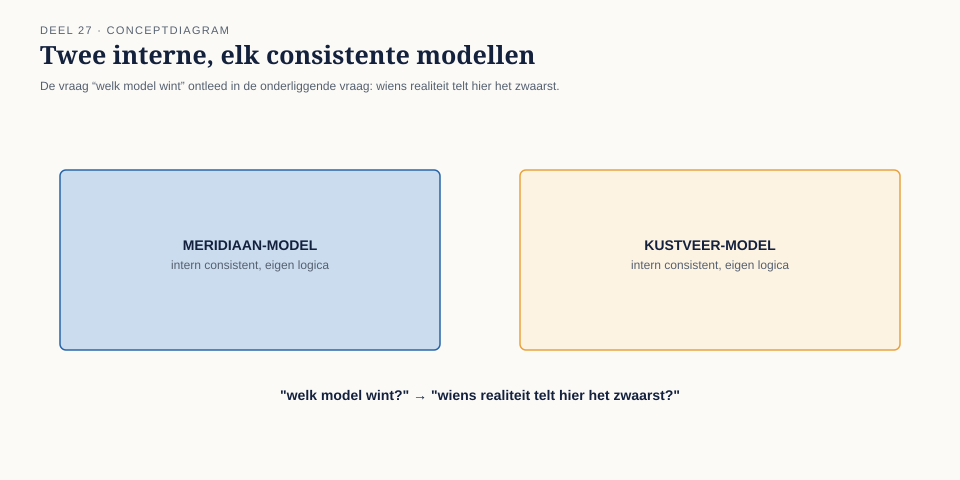
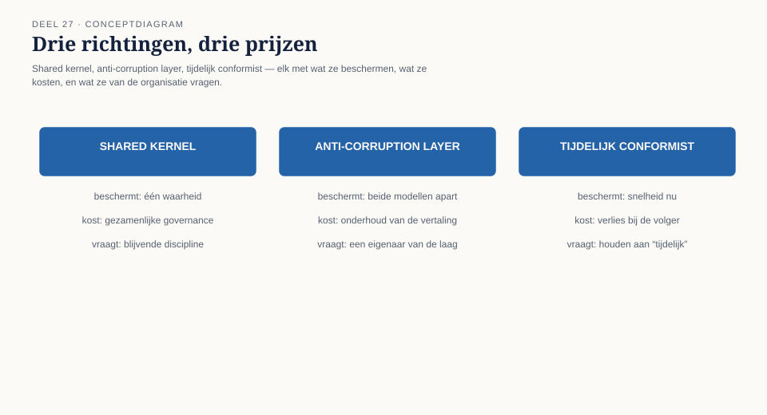
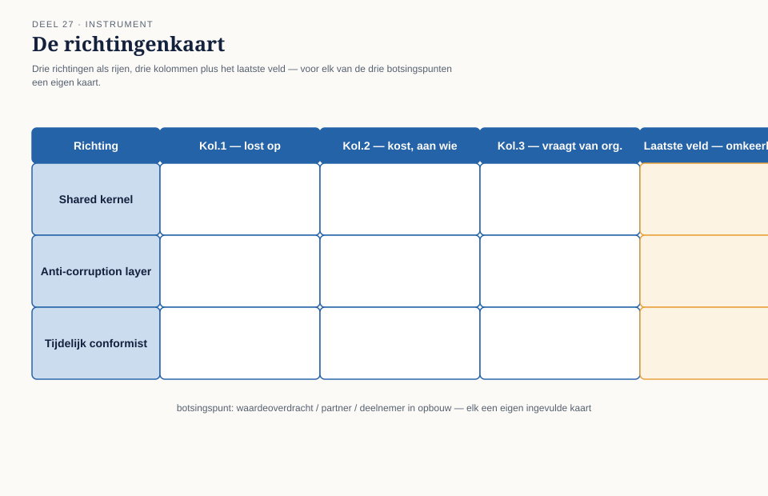

Cursus Domain-Driven Design · Niveau 3 (masterproef) · Deel 27 van 30
Twee modellen, één landschap
Deel 26 eindigde met één begrip op tafel. Dit deel legt de rest van het dossier open: drie botsingspunten tussen twee deelnemersmodellen die elk, op zichzelf, consistent en verdedigbaar zijn — en drie richtingen om ermee om te gaan, zonder dat dit deel al kiest.
8secties
±1u15leestijd + opdrachten
4controlevragen
3oplossingsrichtingen
Positionering. Deze cursus bereidt voor op de iSAQB® Advanced Level-module Domain-Driven Design en is uitdrukkelijk geen vervanging van een erkende iSAQB-training — zij levert op zichzelf geen certificaat op. Alle formuleringen, figuren en werkvormen zijn van Ductus; waar wij naar begrippen van Eric Evans en Vaughn Vernon verwijzen, doen wij dat in eigen woorden en eigen voorbeelden. Studeer voor de module altijd óók bij een erkende provider.
Niveau 3: ➊ Kerndomein heroverwogen → ➋ Grote ballen modder saneren → ➌ Consistentie bij bounded contexts → ➍ Governance en taal-drift → ➎ Fusie en organisatieverandering (hier) → ➏ Oordeel: géén DDD → ➐ CPSA-A-examentraining → ➑ Masterproef
01
Waar dit deel over gaat
⏱ 7 min
Deel 26 eindigde met één begrip op tafel — "deelnemer in opbouw" — en een architect, Youssef Aït Idar, die vroeg om eerst te begrijpen vóór er geoordeeld wordt. Dit deel legt de rest van het dossier open. Niet één botsingspunt, maar drie: waardeoverdracht, de definitie van "partner", en "deelnemer in opbouw" in volle omvang.
Dit deel legt drie mogelijke oplossingsrichtingen op tafel — samenvoegen tot één model, aansluiten via een anti-corruption layer, of tijdelijk als conformist meelopen — en onderzoekt wat elke richting kost en oplevert. Dit deel kiest niet. De knoop doorhakken is het werk van deel 28 en, definitief, van de masterproef in deel 30.
Aan het eind van dit deel kun je:
de drie botsingspunten tussen twee deelnemersmodellen op waarde schatten: waar zit het verschil, en waarom is geen van beide kanten "gewoon fout";
drie generieke oplossingsrichtingen voor een modelbotsing tussen twee organisaties beschrijven, inclusief wat elke richting van een organisatie vraagt;
voor een botsingspunt onderbouwen wat elke richting kost, voor wie, en wat ze oplevert, zonder al een keuze te maken;
met de richtingenkaart een modelbotsing systematisch openleggen op een manier die een verdedigbaar besluit voorbereidt.
02
De casus: de kamer waarin het dossier compleet wordt
⏱ 14 min
Iris heeft de sessie zelf belegd, met een bewust samengestelde deelnemerslijst: Daan en Vera namens de architectuur, Youssef namens Kustveer, Loes Verstappen namens het gecombineerde bestuur, en actuaris Thijs Okkerse om, zoals ze het aankondigt, "elke keuze die vandaag op tafel komt, meteen van een prijskaartje te voorzien."
Daan legt het overzicht neer dat het team sinds deel 26 heeft opgebouwd: drie plekken waar de modellen van Meridiaan en Kustveer verschillende regels dragen onder hetzelfde of gelijkende woord.
Waardeoverdracht. Kustveers coulanceregeling — een erfenis van de cao Kustvaart en Veerdiensten uit 1994 — berekent bij baanwisseling binnen de sector een gunstiger overdrachtswaarde dan Meridiaans standaardmethode. Thijs' eerste doorrekening: bij volledige overgang op Meridiaans standaardmethode verliest een deel van de voormalige Kustveer-deelnemers een niet-triviaal bedrag; het omgekeerde is "actuarieel niet te verantwoorden op deze schaal."
"Partner." Meridiaans sluitende, contractgebonden definitie tegenover Kustveers eigen toetsingsproces voor gezamenlijke huishoudens zonder contract. Loes: "Ik ken mensen in onze achterban voor wie dit letterlijk bepaalt of hun partner iets krijgt als zij overlijden."
"Deelnemer in opbouw." Het verschil uit deel 26, nu naast de andere twee gelegd — volgens Youssef het punt waarop "het duidelijkst zichtbaar wordt dat twee fondsen niet zomaar twee dialecten van dezelfde taal spreken."
Figuur 27-1 — drie botsingspunten, elk met een Meridiaan-regel en een Kustveer-regel
03
Waarom geen van beide modellen "gewoon fout" is
⏱ 12 min
De reflex die Youssef al voorvoelde — "de meeste mensen die naar ons systeem keken, begonnen met 'dit moet anders'" — ligt voortdurend op de loer. Meridiaans model is niet "het standaardmodel" omdat Meridiaan de grotere organisatie is. Kustveers model is niet "de uitzondering" omdat het kleiner is. Beide modellen zijn, elk in hun eigen context, intern consistent, met regels die een aanwijsbare, verdedigbare reden hebben.
Dit is precies waarom context mapping, zoals niveau 2 het introduceerde, nooit een technische exercitie is geweest. De vraag "welk model wint" is, onder de motorkap, altijd de vraag "wiens realiteit telt hier het zwaarst mee" — en die vraag heeft geen neutraal, technisch antwoord. Elke koppeling belichaamt een impliciete keuze over wiens model waar geldt; de vraag is of die keuze bewust wordt gemaakt, of stilzwijgend wordt ingebakken in de eerste de beste technische oplossing.

Figuur 27-2 — "welk model wint" is eigenlijk "wiens realiteit telt hier het zwaarst"
Karsten, later door Daan bijgepraat, formuleert het scherp: "Dat is precies de vraag die we bij WGP 2.0 nooit stelden — wiens model gold eigenlijk, en wie droeg de rekening toen dat nooit was afgesproken?"
Controlevraag
Uit Werkboek deel 27, Opdracht 1 — de drie botsingspunten wegen
1Waarom weegt "partner" in de rangschikking vaak het zwaarst, ondanks dat het niet het grootste financiële bedrag van de drie botsingspunten betreft?Toon antwoord
Omdat het gevolg — geen erkenning bij overlijden — het meest onomkeerbare van de drie is als het misgaat: een overleden deelnemer kan niet met terugwerkende kracht alsnog een erkende partner krijgen, terwijl een gemist bedrag bij waardeoverdracht later nog kan worden bijbetaald.
04
Drie oplossingsrichtingen — en wat elke richting werkelijk vraagt
⏱ 20 min
Voor een botsing tussen twee modellen die één landschap moeten delen, zijn er drie generieke richtingen. Geen van de drie is een technische keuze alleen.
Richting A — Samenvoegen tot één gedeeld model (shared kernel)
De twee modellen worden, voor de botsende begrippen, één model: één definitie van "partner", één rekenmethode voor waardeoverdracht, gedragen door beide kanten samen. Dit maakt het landschap op termijn het eenvoudigst — één waarheid, geen vertaling nodig. De prijs zit in het proces: een shared kernel vraagt voortdurende afstemming en een daadwerkelijk besluit over wiens regel het wordt, of een nieuwe regel die niemand eerder had. Bij drie botsingspunten met elk een reële winnaar en verliezer is dat een bestuurlijk en actuarieel onderhandelingstraject, met een uitkomst die zich niet binnen negen maanden laat forceren zonder iemand tekort te doen.
Richting B — Aansluiten via een anti-corruption layer
Kustveers model blijft, aan de eigen kant, intact — en een expliciete vertaallaag zet Kustveer-begrippen om naar Meridiaan-begrippen (en omgekeerd) op de plekken waar de landschappen elkaar raken. Dit beschermt Meridiaans kernmodel het zuiverst — geen Kustveer-uitzondering lekt door, precies de bescherming die Vera in deel 24 voor KERN bepleitte, nu op een externe in plaats van interne grens. De prijs zit in de vertaling zelf: een laag die twee fundamenteel verschillende partnerdefinities vertaalt, moet een besluit incorporeren over wat er gebeurt met een Kustveer-partner zonder contract. De laag verbergt de botsing niet; hij legt haar vast, op één plek.
Richting C — Tijdelijk conformist, tot na de deadline
Kustveer sluit, voorlopig, aan op Meridiaans model zoals het is — een bewuste, tijdelijke keuze om de eigen regels opzij te zetten totdat er, ná 1 januari 2028, ruimte is om zorgvuldiger te kiezen. Dit leidt het snelst tot een werkend landschap vóór de deadline. De prijs is het scherpst: voor de duur van het conformist-zijn verliezen sommige voormalige Kustveer-deelnemers een recht of bedrag tijdelijk — of, als "tijdelijk" nooit wordt afgerond, feitelijk blijvend. Deze richting is alleen verdedigbaar als de tijdelijkheid geen loze belofte is: een concreet vervolgmoment, een aanwijsbare eigenaar, en eerlijke erkenning naar de getroffen deelnemers van wat er in de tussentijd wordt opgegeven.

Figuur 27-3 — drie richtingen, elk met een eigen bescherming, prijs en vereiste discipline
Geen van de drie richtingen is "de DDD-manier" — DDD levert het instrumentarium om elke richting eerlijk te doordenken, niet een voorkeur voor een van de drie.
Controlevraag
Uit Werkboek deel 27, Opdracht 3 — de drie richtingen op een nieuw botsingspunt
1Kustveer kent een aanvullende overlijdensuitkering die Meridiaan niet kent en waarvoor geen equivalent bestaat. Wat betekent "tijdelijk conformist" hier concreet, en waarom is dat een fundamenteel andere ingreep dan bij een verschil in rekenmethode?Toon antwoord
De uitkering vervalt voor nieuwe situaties na de overname, met de knoop "voor altijd of definitief vervallen" doorgeschoven naar na de deadline. Dit is zwaarder dan bij waardeoverdracht, omdat het hier niet gaat om tijdelijk een andere regel volgen, maar om een recht tijdelijk niet uitkeren — met het risico dat "tijdelijk vervallen" in de praktijk "definitief vervallen" wordt als niemand het later agendeert.
05
Waarom dit geen zuiver architecturale keuze is
⏱ 10 min
Wat deze sessie onderscheidt van een context-mappingoefening binnen één organisatie, is dat elke richting hier een reëel, individueel herkenbaar gevolg heeft voor mensen die niet aan tafel zitten. Thijs, na Daans overzicht: "Ik kan voor elke richting een venster laten zien van wie wint en wie verliest, in euro's en in maanden vertraging. Wat ik niet voor jullie kan doen, is zeggen welke verliezer aanvaardbaar is. Dat is geen actuariële vraag."
Dat is precies waarom de rolverdeling in deze kamer — architect, bestuurslid, actuaris — geen toeval is, en waarom de masterproef in deel 30 vier rollen kent in plaats van één architect die in isolatie beslist. Een context-mappingbesluit tussen twee organisaties is onderbouwd door een expliciete erkenning van wie de rekening betaalt voor elke richting, en of die verdeling te verdedigen is.
Figuur 27-4 — architect, bestuurslid, actuaris: drie vragen die samen een besluit onderbouwen
Loes, aan het eind van de sessie: "Ik hoor drie richtingen, en ik hoor voor elk een prijs. Wat ik nog niet hoor, is wie in deze kamer straks zegt: dit is de prijs die we kiezen, en dit is waarom die eerlijk is." Foppe, later tegen Daan: "Vandaag was niet de dag om te kiezen. Vandaag was de dag om te zorgen dat de keuze, wanneer hij komt, geen van de drie prijzen verrast."
06
De richtingenkaart
⏱ 16 min
De richtingenkaart is het instrument van dit deel: voor een gegeven botsingspunt leg je de drie oplossingsrichtingen systematisch naast elkaar, zonder al te kiezen — een voorbereiding op een besluit, geen vervanging ervan.
Kolom
Vraag
1 — Wat lost deze richting werkelijk op?
Welk deel van de botsing is hierna verholpen, en welk deel blijft onopgelost of latent?
2 — Wat kost deze richting, en aan wie?
Welke groep wint, welke groep verliest, en is dat verlies tijdelijk of structureel?
3 — Wat vraagt deze richting van de organisatie om vol te houden?
Governance (shared kernel), een onderhoudende eigenaar (ACL), of discipline om "tijdelijk" waar te maken (conformist).
Laatste veld — Is dit verlies omkeerbaar, en door wie gedragen?
Kan het besluit worden teruggedraaid zonder onherstelbare schade, en heeft de beslisser het mandaat om dat verlies namens de geraakten te dragen?

Figuur 27-5 — de richtingenkaart: drie richtingen, drie kolommen, en één afsluitend veld
Elke richting faalt niet primair op de dag dat hij wordt gekozen, maar op de dag dat de organisatie de discipline mist om hem vol te houden. Dit veld is waarom de richtingenkaart nooit door een architect alleen wordt ingevuld: kolom 1 en 3 zijn architecturale vragen, kolom 2 en het laatste veld zijn dat niet, of niet alleen.
De kaart wordt in dit deel voor alle drie de botsingspunten geopend, maar bewust niet afgesloten — kolom 1 en 3 worden grotendeels in de sessie ingevuld; kolom 2 en het laatste veld, waar Thijs en Loes verdere doorrekening en achterbanraadpleging nodig hebben, blijven open voor deel 28.
Controlevraag
Uit Werkboek deel 27, Opdracht 6 — de richtingenkaart op "partner"
1Waarom is richting C (tijdelijk conformist) voor het botsingspunt "partner" volgens het laatste veld van de richtingenkaart bijzonder risicovol vergeleken met waardeoverdracht?Toon antwoord
Omdat het verlies bij "partner" niet omkeerbaar is zodra het zich voordoet: een overleden deelnemer kan niet met terugwerkende kracht alsnog een erkende partner krijgen. Bij waardeoverdracht kan een gemist bedrag later nog worden bijbetaald — bij "partner" bestaat die herstelmogelijkheid niet, wat betekent dat het besluit niet bij de architect alleen hoort te liggen, maar bij het bestuur met een stem namens de geraakte groep.
07
Terug naar de casus: drie kaarten, nog geen besluit
⏱ 12 min
Aan het eind van de sessie liggen er drie, deels ingevulde richtingenkaarten op tafel. Voor waardeoverdracht tekent zich af dat noch volledige samenvoeging naar Meridiaans standaardmethode, noch landschapsbrede toepassing van Kustveers coulanceregeling, actuarieel of bestuurlijk op korte termijn haalbaar is — wat richting B en C allebei serieuzer maakt dan Daan bij binnenkomst had verwacht. Voor "partner" ligt het gevoeliger: Loes maakt duidelijk dat een tijdelijk-conformist-keuze hier een risico draagt dat zich niet laat compenseren als het misgaat.
Youssef sluit af: "Ik hoorde vandaag voor het eerst een gesprek dat niet begon met 'dit moet passen in jullie systeem.' Dat betekent nog niet dat ik het eens ben met waar dit naartoe gaat. Maar het betekent dat ik bereid ben om mee te blijven praten." Willemijn, aangeschoven vanwege haar ervaring met het Nabestaandenloket-model uit niveau 1: "Ons model had toen nog geen ruimte voor een partnerschap zonder contract. Dat was toen geen oversight — dat was omdat we het probleem nog niet kenden. Nu kennen we het wel, en dat verandert wat 'geen ruimte hebben' betekent."
Iris sluit af zonder een besluit te forceren: "We gaan hier niet vandaag uitkomen, en dat is precies goed. Wat ik wél wil, is dat niemand deze kamer verlaat met het idee dat er een makkelijke uitkomst is die we nog niet hebben gezien. Die is er niet. Er zijn drie richtingen, en elke richting heeft een prijs die iemand in deze organisatie, of in Kustveer, gaat dragen."
Samenvatting
Drie botsingspunten — waardeoverdracht, "partner", "deelnemer in opbouw" — elk met een Meridiaan-regel en een Kustveer-regel die op zichzelf beide verdedigbaar zijn.
Drie generieke richtingen: shared kernel, anti-corruption layer, tijdelijk conformist — elk met een eigen prijs en een eigen eis aan organisatiediscipline.
De richtingenkaart legt kolom 1 (wat lost het op) en 3 (wat vraagt het) architecturaal vast; kolom 2 (wie betaalt) en het laatste veld (omkeerbaarheid) vragen bestuurlijke en actuariële inbreng.
Dit deel kiest bewust niet — dat gebeurt in deel 28 en definitief in de masterproef van deel 30.
08
Vooruitblik
⏱ 7 min
Dit deel heeft de volle botsing tussen twee deelnemersmodellen op tafel gelegd — drie botsingspunten, geen van beide kanten "gewoon fout" — en drie generieke oplossingsrichtingen geïntroduceerd. De richtingenkaart heeft laten zien wat elke richting oplost, kost, en van de organisatie vraagt om vol te houden — zonder de knoop door te hakken.
Vooruit naar deel 28
Dat blijft bewust onbeslist: deel 28 behandelt wanneer een team zichzelf voor de gek houdt door een DDD-oplossing te forceren die de tijdsdruk niet eerlijk verdraagt, en wat het betekent om, onder het toeziend oog van DNB, een onderbouwd "nog niet" te verdedigen. Pas in de masterproef van deel 30, met alle drie de richtingen, alle drie de botsingspunten en alle vier de rollen uit deze kamer aan tafel, valt het echte besluit — en verdedigt Daan het.
Verder naar deel 28
Drie richtingen, elk met een prijs, en nog geen besluit. Deel 28 behandelt wanneer een team zichzelf voor de gek houdt door een DDD-oplossing te forceren, en hoe je — ook tegenover een toezichthouder — een onderbouwd "nog niet" verdedigt.